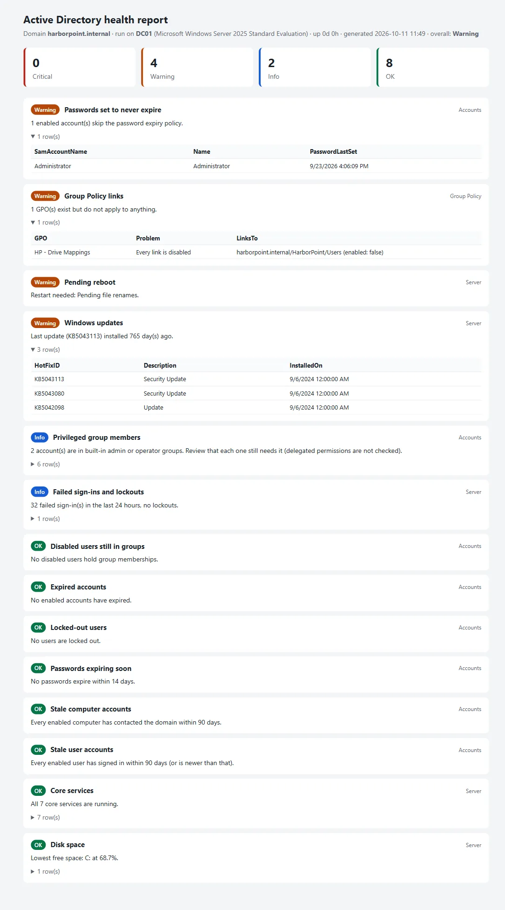

← All projects
Active Directory health report
A read-only PowerShell script that checks a Windows domain and saves the result as one HTML page, with problems sorted to the top so whoever opens it sees what needs attention first.
- Type
- Personal tool, part of the AD homelab
- Language
- Windows PowerShell 5.1
- Changes made
- None: it only reads
- Found
- A real misconfigured GPO in my lab

What it found
On my homelab it flagged a real problem: the HP – Drive Mappings Group Policy still existed, but its only link was disabled, so it applied to no one and nobody got their mapped drives. Nothing looked wrong until someone asked where their drives had gone.
What it checks
| Area | Checks |
|---|---|
| Accounts | Locked-out users, expired accounts, passwords expiring within 14 days or set never to expire, users and computers with no sign-in for 90 days, disabled users still in groups, members of the built-in admin and operator groups |
| Group Policy | GPOs that are unlinked, have every link disabled, or have all settings disabled |
| Server | Core directory services running, disk space, failed sign-ins and lockouts from the Security log in the last 24 hours, a pending restart, and how long since the last update |
How it’s built
- Read-only. It changes nothing in AD or on the server, so it’s safe to run on a production DC.
- One failure doesn’t stop the report. If a check fails, for example for lack of permission, it shows as Critical with the error and the rest still runs.
- Every threshold is a parameter, such as how many days count as stale.
- Problems first. Results are sorted by severity, so the top of the page is what needs attention.
Built with AI assistance and tested against my lab’s domain controller.